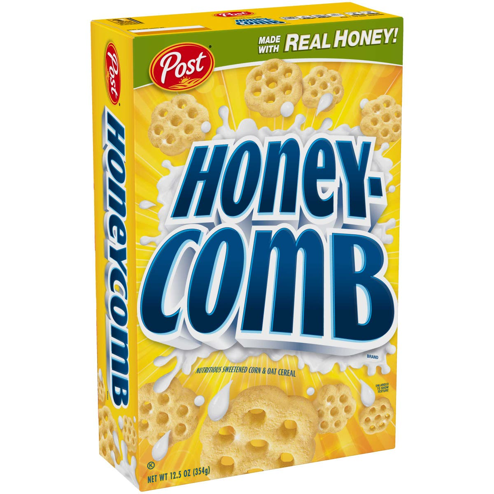

The C tier is just okay. These are mid-range cereals that I could live with or without. I don't have a strong opinion of them either way, and I understand why some people would love them or hate them. I'd eat a bowl if it was the only thing around, but I would never buy these cereals of my own accord. They're fine.
Cheerios
Cheerios are an American classic. They have been a staple in pretty much every household, and as a kid I ate them all the time. I definitely get the appeal, but they do not hold a candle to the Honey Nut version. They get soggy really quickly, and they don't have much distinct flavor. The taste can be improved by adding fruit to your bowl of cereal, but still not what I would reach for.
Frosted Flakes
Don't get me wrong, I love some sugary cereals, but Frosted Flakes are just too sweet for me. The texture and crunch of the flakes are good, but I can't really stomach the overwhelming sugar. I get why people like it, but I'm not one of those people.
Cookie Crisp
As a kid I loved Cookie Crisp, but the older I get the more I question the quality of this cereal. I do definitely see why I liked it, it's just eating cookies for breakfast. But the cookies honestly aren't that good. The chocolate chips are weird and small and the cookie pieces are really hard and don't even get much softer with milk. They're okay, I think save them for people under the age of 12.
Honey-Comb

I have a very distinct memory of the first time I tried Honey-Comb (or is it Honeycomb? idk). I had always wanted to try it because I had seen it at my friend's house, but when I finally did I was disappointed. It kinda just tastes like sweetened styrofoam. I still feel this disappointment every time I taste it to this day.
Cocoa Pebbles
Cocoa Pebbles are fine, but not as good as Fruity Pebbles or as good as Cocoa Puffs. They have a weird chemical taste and there are better options for whatever it is you're trying to get out of Cocoa Pebbles.
Frosted Mini Wheats
The real appeal to Frosted Mini Wheats is the Frosted part. The plain mini wheat part is just not that good. The pieces fall apart really easily and the flavor isn't good, kinda cardboard-y. The frosting does save it, but not enough to make me want to eat it.